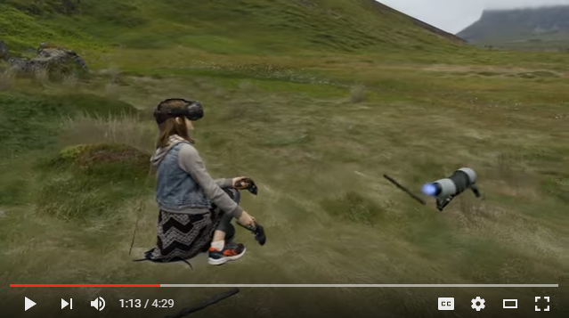

用HTC Vive拍摄Mixed Reality视频
也许你是一位开发者，想为自己的Vive游戏制作酷炫的宣传片；或者你是游戏主播，想为观众带来高品质的VR直播体验；也许你是一位VR和爱好者。无论如何，如果你对Mixed Reality感兴趣，请继续看下去。本文将介绍如何用HTC Vive拍摄高品质MR视频。
什么是Mixed Reality视频？
Mixed Reality视频就是VR影像+人的影像合成的视频。相比普通方法录制的VR视频，Mixed Reality视频更适合用来做游戏直播和制作宣传视频。

上面这个视频截图就是来自一个Mixed Reality视频，画面中的草地、狗、木棍都是VR游戏的画面，而人的影像是由一台摄像机实时捕捉的。因为人的影像摆放的位置和玩家在虚拟场景中的位置一样，摄像机拍摄画面中手的位置和游戏画面中手的位置是完全一样的，看起来就像体验者走进了一个虚拟世界，并用双手直接和环境互动。
MR视频的原理
普通的VR视频是将体验者左眼看到的影像录制下来。这样的第一人称视角录制带来两个问题，一是因为视角原因看不到体验者的全身，二是即使低头看到了，也只是看到虚拟的模型，甚至多数时候只能看到两只漂浮的手。
要解决这两个问题。就需要
- 切换成第三人称视角
- 将体验者的影像也录制下来
- 将游戏画面和摄像机影像合成
下面逐个解释如何实现。
1. 切换成第三人称视角
普通的Vive程序是在玩家头盔的位置摆放两个虚拟camera对应左右眼，分别生成左右眼的画面传给HMD，然后将其中一只眼的画面复制到PC屏幕上。
为了让屏幕上产生第三人称视角的游戏画面，就需要在和玩家一定距离外摆放一个额外的虚拟camera，并且镜头要对准玩家所在位置。之后PC上显示的不再是左右眼画面的复刻，而是由这个额外的camera单独绘制的（会增加一定的渲染负担）。
2. 将体验者的影像录制下来
因为我们只需要玩家本人的影像，并不需要看到房间里的桌子、墙壁等背景。所以要用到抠像技术。
在录制的时候，让体验者在一个周围是绿布（或者其他颜色）的房间里，然后用一个摄像机（webcamera或者专业的摄像机）录制他玩游戏时的影像。最后在捕捉到的视频中将绿色去掉，就只剩下人的影像了。
3. 将游戏画面和摄像机影像合成
在1.和2.中我分别提到了一个虚拟摄像机和一个真实的摄像机。为了让他们拍到的影像能合成起来，需要保证他们的视角是一样的。也就是说，假如虚拟摄像机在游戏里的位置是主角左前方2米、朝向和主角的朝向成120度角，那么要保正现实中摄像机在体验者左前方2米，朝向和体验者朝向成120度角。这就需要借助第三个手柄来定位和定向。
将额外的手柄绑在摄像机上，或者将手柄和摄像机绑在同一个位置上，原则是确保它们相对位置、相对朝向是不变的。这样当现实中摄像机移动时，游戏通过感知手柄的位置变化，也相应地改变虚拟摄像机的位置。
然后，把游戏中的物体按位置分为两类，一类是前景，位置在摄像机到玩家之间，另一类是背景，位置在玩家之后。最后把背景、体验者影像、前景合成成视频。
需要准备什么？
硬件部分：
摄影棚：
墙和地面铺上绿布，5m*5m。

摄像机：
两种方案，
低成本：是webcamera，例如Logitech Webcam C930e
高成本：专业摄像机+视频采集卡。例如Sony A7S II
高性能主机：
因为同时需要运行Vive游戏和录像，对配置要求较高。显卡推荐980ti，CPU推荐i7-4790以上。
第三个手柄：
目前Vive只能连接两个无线手柄，所以需要用一个长一点的USB线来连接第三个手柄。
4K屏幕：
为了合成1080p视频，屏幕需要能放得下多个1080p窗口。
软件部分：
Unity3D + SteamVR:
目前只有Unity3D制作的程序支持MR模式。
只要游戏用的SteamVR版本是1.0.8或以上，就可以用于拍摄。否则需要开发商升级SteamVR后再发布一个版本。
OBS:
或者其他视频合成软件。
如何拍摄
- 为游戏开启MR模式
- 安装摄像机和第三个手柄
- 调整视频合成软件
下面详细解释。
为游戏开启MR模式
- Unity SteamVR插件版本升级到v1.0.8或以上
- 在游戏的根目录（如果用的是Unity3D工程而不是发而好的游戏，就放在工程根目录）下加上externalcamera.cfg
新建一个空白文件，重命名为externalcamera.cfg，在其中加上如下内容：
x=0
y=0
z=0
rx=0
ry=0
rz=0
fov=60
near=0.1
far=100
sceneResolutionScale=0.5
要注意的是，以上参数只是默认值。最终要用什么数和摄像机的参数及摄像机和手柄的摆放有关。
3. 连接第三个手柄
通过USB连接第三个手柄。
如果这三个条件都准备好了，点击开始游戏，PC上的游戏画面会分成4块，具体见下面的"OBS合成"。
安装摄像机和第三个手柄：
硬件安装
如果有相机肩架或者手架，将摄像机和手柄都安装在架子上。如果没有架子，就把手柄绑在相机上。确保在移动架子（或者相机）的时候，相机和手柄相对位置和相对朝向不变。

计算出摄像机和手柄之间的偏移
也就是得出externalcamera.cfg中的参数。x,y,z是摄像机和手柄的相对位置，rx,ry,rz是相对朝向。
比较方便的做法是通过特制的校准软件来实现。另外也可以手动调externalcamera.cfg中的数值。
用OBS合成视频或视频流
如果准备好Mixed Reality所需要的条件，PC上的游戏画面会分成4块：

其中，
Foreground: 合成视频的前景
Foreground alpha: 前景的alpha
Background: 合成视频的背景
Gameview: 正常游戏画面，不用于合成mixed reality视频
最终输出的影像和下图展示的一样，是由三个影像合成的：
摄像机捕捉人的影像，覆盖在背景上（山和太阳），前景（花）覆盖人和背景上。

因此要在OBS中添加以下三个视频源：
1. 前景
a. 视频来源选择裁剪游戏窗口，裁剪区域和4分画面的左上角画面重合。
b. 设置黑色为色键，抠出前景画面
2. 摄像机捕捉
a. 视频来源选择webcamera或者视频采集卡
b. 设置绿色为色键（和绿幕颜色一样），抠出人像
3. 背景
视频来源选择裁剪游戏窗口，裁剪区域和4分画面的左下角画面重合